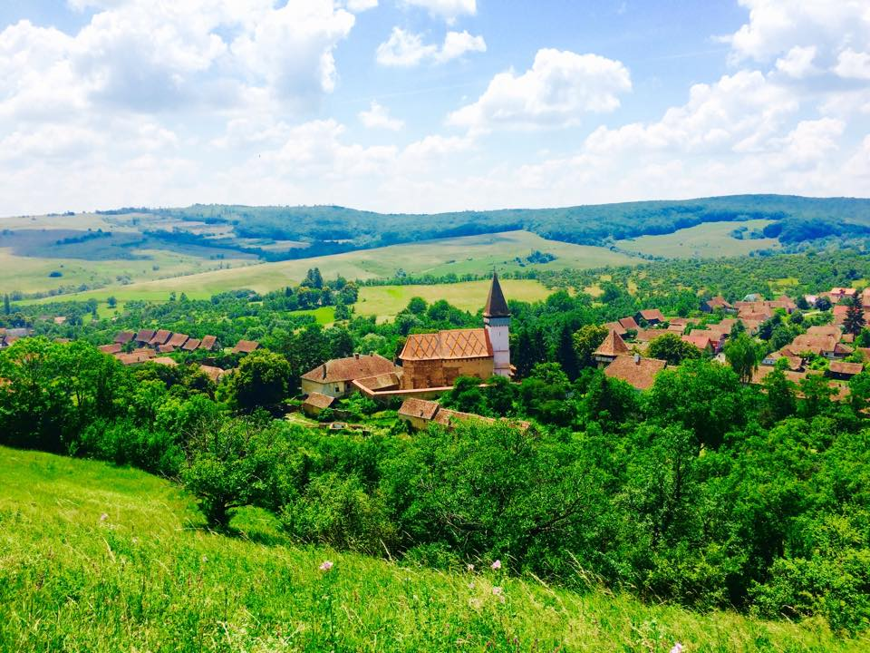

Ciocănești
Ciocănești is a picturesque commune in Suceava County, northern Romania, and it's famous, historical, and attractive to tourists for several compelling reasons:
🌟 Why is Ciocănești famous?
- Cultural Continuity: The commune reflects the deep-rooted traditions of the Bukovina region, preserving a way of life and craftsmanship that goes back centuries.
- Ethnographic Significance: Ciocănești has preserved elements of Dacian and Romanian rural culture, including traditional crafts, carpentry, and weaving, and is involved in maintaining old rituals, folklore, and religious customs.
- Declared Cultural Heritage Site: In 2004, it was officially declared a cultural site of national importance, recognizing its unique blend of artistic, architectural, and cultural history.
📜 Why is Ciocănești historical?
- Cultural Continuity: The commune reflects the deep-rooted traditions of the Bukovina region, preserving a way of life and craftsmanship that goes back centuries.
- Ethnographic Significance: Ciocănești has preserved elements of Dacian and Romanian rural culture, including traditional crafts, carpentry, and weaving, and is involved in maintaining old rituals, folklore, and religious customs.
- Declared Cultural Heritage Site: In 2004, it was officially declared a cultural site of national importance, recognizing its unique blend of artistic, architectural, and cultural history.
🧳 Why do tourists visit Ciocănești?
- Authentic Cultural Experience: Tourists are drawn to its authenticity—walking through Ciocănești feels like stepping back in time into an open-air museum.
-
Annual Festivals:
- The Trout Festival (Festivalul Păstrăvului) celebrates the region’s culinary traditions.
- The National Festival of Painted Eggs, held around Easter, showcases traditional egg painting—a hallmark of Bukovina art.
- Natural Beauty: Located in the Carpathian Mountains, it offers stunning landscapes, hiking opportunities, and eco-tourism.
- Ethnographic Museum: The local museum displays traditional clothing, tools, and artifacts that give insights into village life over the centuries.
✅ Summary
Ciocănești is famous for its unique painted houses, historical for preserving centuries-old traditions and crafts, and visited for its culture, festivals, and scenic location. It stands as a symbol of Romanian rural heritage and creativity, drawing visitors who seek both beauty and cultural depth.
Margea (Mărgău)
🌟 Why is Mărgău famous?
- Traditional Glassmakers (Sticlari din Mărgău): Mărgău was historically famous for its itinerant glassmakers, who traveled across Europe producing and selling handmade glassware. These skilled craftsmen helped shape Mărgău’s reputation in the 18th and 19th centuries as a hub of Transylvanian artisanal craftsmanship.
- Village of Rare Traditions: The commune is known for preserving unique local dialects, customs, and crafts, especially in the more isolated villages.
- Hometown of Emil Racoviță: Emil Racoviță, the famous Romanian biologist, explorer, and founder of biospeleology (the study of cave life), was born in Șură Mică, which is part of the commune. His legacy adds scientific and cultural prestige to the area.
📜 Why is Mărgău historical?
- Ancient Settlement: Mărgău and its surrounding villages have Dacian and medieval roots, with archaeological and documentary evidence showing continuous habitation.
- Ethnographic Value: The commune is part of the Apuseni ethnographic zone, important for preserving authentic Romanian mountain village life, including architecture, costume, language, and seasonal traditions.
- Cultural Isolation = Preservation: Due to its relatively remote mountain location, Mărgău has maintained much of its traditional lifestyle and historical identity without significant outside influence.
🧳 Why do tourists visit Mărgău?
- Nature & Hiking (especially Răchițele village): Home to the Vălul Miresei Waterfall (“The Bride’s Veil”), a major tourist attraction in Răchițele, perfect for photography and hiking. The surrounding Apuseni Mountains offer scenic trails, caves, and forests ideal for eco-tourism and adventure seekers.
- Ethnographic Tourism: Tourists interested in Romanian culture can explore traditional homes, attend local festivals, and experience the rural way of life that has remained mostly unchanged.
- Winter Sports: Nearby areas in the commune offer facilities for skiing and snowboarding during the winter months, especially in the Răchițele area.
✅ Summary
Mărgău is famous for its traditional glassmaking, historical for its deep ethnographic and cultural roots, and attracts tourists for its natural beauty, traditional heritage, and unique mountain experiences. It is a rich blend of Romanian history, rural life, and scenic wonder.
Șirnea
Șirnea is a picturesque village in Brașov County, Romania, part of the Fundata commune, located in the Southern Carpathians, between the Piatra Craiului and Bucegi Mountains. Though a small and quiet place, Șirnea is famous, historical, and visited by tourists for several unique reasons:
🌟 Why is Șirnea famous?
- Romania’s First Touristic Village: In 1968, Șirnea was declared the first “touristic village†in Romania by the Ministry of Tourism. This designation was based on its natural beauty, cultural heritage, and hospitality.
- Scenic Mountain Landscape: Șirnea is famous for its spectacular views, fresh air, and pastoral beauty—it lies at around 1,200 meters elevation, making it one of the highest inhabited villages in Romania.
- Cultural Events: It’s well known for traditional events such as “The Long Night of the Fires†(Noaptea de Sânziene) and Shepherding Celebrations that keep mountain customs alive.
📜 Why is Șirnea historical?
- Shepherding and Rural Traditions: Șirnea has a long history of shepherding and transhumance, representing one of the oldest mountain-based economies in Romania. It preserved old Romanian customs, clothing, architecture, and food practices passed down over centuries.
- Historical Geography: Its strategic location between Transylvania and Wallachia made it part of several important historical trade and migration routes, giving it cultural influences from both regions.
- Resistance and Identity: During various conflicts in the 20th century, including WWII, Șirnea and the surrounding villages played roles in local resistance movements, reflecting the strong national and local identity of the people.
🧳 Why do tourists visit Șirnea?
- Eco-Tourism & Mountain Activities: Tourists visit for hiking, horseback riding, mountain biking, and exploring nearby natural parks, including Piatra Craiului National Park. The clean air, alpine meadows, and forests make it a haven for nature lovers.
- Authentic Rural Life: Visitors come to experience authentic Romanian village life, with locally produced food, traditional guesthouses, and a peaceful environment.
- Photographic and Cultural Tourism: Its combination of dramatic mountain backdrops and well-preserved village scenery makes it ideal for photographers, cultural tourists, and those seeking relaxation.
✅ Summary
Șirnea is famous as Romania's first touristic village, historical for its shepherding traditions and strategic location, and visited for its breathtaking mountain views, cultural authenticity, and peaceful rural lifestyle. It remains a symbol of traditional Romanian mountain culture.
Rimetea
Rimetea, located in Alba County, Transylvania, Romania, is one of the most charming and historically rich villages in the country. It is especially known for its Hungarian heritage, picturesque mountain setting, and exceptionally well-preserved traditional architecture.
🌟 Why is Rimetea famous?
- “The Place Where the Sun Rises Twice†Rimetea is famously described as “the village where the sun rises twice.†This happens because the Piatra Secuiului (Szekler’s Rock) mountain casts a large shadow in the early morning; after the sun first rises, it disappears briefly behind the cliff before reappearing—giving the illusion of a second sunrise.
- Well-Preserved Traditional Architecture: The village is renowned for its whitewashed houses with green window shutters, cobblestone streets, and wooden gates, all built in the traditional Hungarian-Szekler style. Rimetea received the Europa Nostra Award for heritage conservation—the first village in Romania to do so.
- Hungarian Cultural Identity in Romania: The population of Rimetea is majority ethnic Hungarian (Szekler), and the village is a living example of Transylvanian Hungarian rural culture, preserved in daily life, festivals, cuisine, and language.
📜 Why is Rimetea historical?
- Iron Mining and Blacksmithing Legacy From the 17th to the 19th century, Rimetea was a thriving iron mining and blacksmithing center, with tools and products traded across Central Europe. The local economy, crafts, and village life were shaped by this industry.
- Multi-Empire Heritage Rimetea has lived under various rulers: the Kingdom of Hungary, Ottoman vassalage, Austro-Hungarian Empire, and modern Romania—making it a microcosm of Transylvania’s complex political and ethnic history.
- Folk Traditions and Customs The village has preserved centuries-old customs, clothing, dances, and religious traditions, offering insight into rural Hungarian life as it was hundreds of years ago.
🧳 Why do tourists visit Rimetea?
- Stunning Natural Landscape Rimetea is set against the dramatic cliffs of Piatra Secuiului, ideal for hiking, paragliding, rock climbing, and nature photography. The surrounding Trascău Mountains are part of Romania’s Apuseni range and offer rich flora and fauna.
- Authentic Cultural Experience Tourists are drawn to Rimetea for its peaceful rural atmosphere, local cuisine, and folk traditions. Staying in traditional guesthouses (pensiuni) and participating in seasonal festivals is a highlight for many.
- Historical and Ethnographic Attractions The Rimetea Ethnographic Museum showcases local history, traditional crafts, and tools from the mining era. Guided tours often include visits to churches, mills, and cultural landmarks.
✅ Summary
Rimetea is famous for its natural beauty and Hungarian village charm, historical for its iron mining roots and multicultural heritage, and visited by tourists for hiking, culture, and tranquility. It’s one of the best-preserved rural villages in Romania and a jewel of Transylvanian tourism.
Viscri
A small village in Brașov County, Romania, is internationally recognized for its remarkable preservation of Saxon heritage, its UNESCO-listed fortified church, and its quiet charm that has drawn global attention—including from King Charles III of the United Kingdom, who owns a house there.
🌟 Why is Viscri famous?
- UNESCO World Heritage Site The Viscri Fortified Church (13th century) is part of the UNESCO World Heritage list of villages with fortified churches in Transylvania. It's considered one of the most authentic and beautiful examples of Saxon medieval architecture in Romania.
- Royal Attention: King Charles III The village gained massive fame when King Charles (then Prince of Wales) bought and restored a traditional Saxon house in Viscri. He praised the village’s sustainability, architecture, and traditions, helping boost international tourism.
- Saxon Cultural Identity Viscri is a prime example of a Transylvanian Saxon settlement, with colorful houses, cobbled roads, and a lifestyle rooted in 18th–19th century German-speaking communities.
📜 Why is Viscri historical?
- Medieval Saxon Heritage Founded in the 12th century by Saxon (German) settlers, Viscri reflects the architecture, village planning, and customs brought by them. The fortified church, originally Romanesque, was later expanded in Gothic style and used by locals as a refuge during invasions.
- Well-Preserved Rural Life Viscri preserves a rare glimpse of pre-industrial European rural life, with horse-drawn carts, traditional farming, and handmade crafts still in use.
- Part of Transylvania’s Ethnic Mosaic The village is a living relic of Transylvania’s multicultural past—with Saxon, Romanian, and Hungarian influences coexisting for centuries.
🧳 Why do tourists visit Viscri?
- Cultural Heritage & Architecture Tourists visit to see the fortified church, traditional Saxon homes, and walk along cobblestone streets unchanged for generations.
- Authentic Rural Tourism Viscri is a model for eco-tourism and cultural tourism. Visitors can stay in restored homes, eat home-cooked local food, and watch or participate in crafts like blacksmithing and weaving.
- Nature & Tranquility Located in a pastoral landscape of rolling hills, hayfields, and forests, the area is perfect for biking, hiking, bird-watching, or simply unplugging from modern life.
✅ Summary
Viscri is famous for its UNESCO-listed fortified church and royal ties, historical for its Saxon-German medieval roots and preserved way of life, and visited for its cultural heritage, peaceful nature, and authentic rural charm. It is one of the most iconic and photogenic villages in Romania.